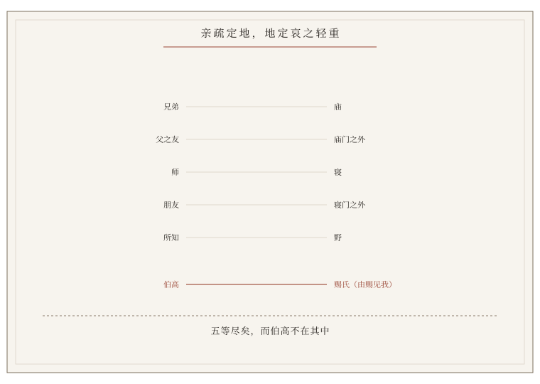

檀弓上 · 三·三十八 · 第 241 课
伯高死于卫，赴于孔子。孔子曰：「吾恶乎哭诸？兄弟，吾哭诸庙；父之友，吾哭诸庙门之外；师，吾哭诸寝；朋友，吾哭诸寝门之外；所知，吾哭诸野。于野则已疏，于寝则已重。夫由赐也见我，吾哭诸赐氏。」遂命子贡为之主，曰：「为尔哭也来者，拜之；知伯高而来者，勿拜也。」注「别亲疏也」「别轻重也」「本于恩，哭于子贡寝门之外」「异于正主」。
说什么事：一个人不属于任何现成的一等，怎么办。
落在哪一层：礼，兼及礼意。论「哭所」与「丧主」。
为何编在此位：上节言礼不可代，此节言礼无其位者，当以所由之位位之。
【经】伯高死於衛，赴於孔子。孔子曰：「吾惡乎哭諸？兄弟，吾哭諸廟；父之友，吾哭諸廟門之外；師，吾哭諸寢；朋友，吾哭諸寢門之外；所知，吾哭諸野。於野則已疏，於寢則已重。夫由賜也見我，吾哭諸賜氏。」遂命子貢為之主，曰：「為爾哭也來者，拜之；知伯高而來者，勿拜也。」
【注】赴，告也。凡有旧恩者，则使人告之。以其交会尚新。别亲疏也。师，吾哭诸寝。别轻重也。于野则已疏，于寝则已重。已犹大也。本于恩，哭于子贡寝门之外。明恩所由。异于正主。
【疏】此一节论亲疏所哭之处。兄弟亲，父友疏，必哭诸庙及庙门外者：兄弟是先祖子孙，则哭之于庙，此殷礼；周则哭于寝，故《杂记》云「有殡，闻远兄弟之丧，哭之侧室；若无殡，当哭诸正寝」。父之友与父同志，故哭诸庙门外，非先祖之亲，故在门外也。师友为重，所知为轻，所以哭师于寝，寝是己之所居，师又成就于己，故哭之在正寝，此谓殷礼；若周礼，则《奔丧》云「师哭诸庙门外」，故郑答赵商之问亦以为然，孙炎云「《奔丧》，师哭诸庙门外，是周礼也」。凡丧之正主知生知死，来者悉拜；今与伯高相知而来不拜，故郑云「异于正主」。
赴 注「告也」。凡有旧恩者，则使人告之。
恶乎 注「恶音乌，恶乎犹『于何』也」。
已疏、已重 注「已犹大也」。太疏、太重。
由赐也见我 因卜子夏之赐而与我相识。赐，子贡名。
为之主 命子贡为丧主，主此哭之礼。
为尔哭也来者 为尔（子贡）而来哭者。
异于正主 注「凡丧之正主知生知死，来者悉拜」，此则否。
伯高死于卫，卫人来赴告孔子。孔子说：「我该在哪里哭他？兄弟，我哭于庙；父之友，哭于庙门之外；师，哭于寝；朋友，哭于寝门之外；所知，哭于野。在野就太疏，在寝就太重。他是因赐而见我的，我就哭于赐之家。」于是命子贡为丧主，说：「为你而来哭的人，你拜他；为伯高而来的人，不要拜。」
此节先列五等，然后自问「吾恶乎哭诸」。五等自上而下，由亲而疏，本已尽矣，而伯高不在其中——注说「以其交会尚新」。新交无位，故问。问之法不在五等中选择，而在追其「所由」：「夫由赐也见我」，则哭于赐氏。此一节最见礼的活处：礼有五等而不止五等，无位者以所由之位位之。
第一层 五等哭所 庙（兄弟）／庙门之外（父之友）／寝（师）／寝门之外（朋友）／野（所知）。由亲而疏，其地由内而外。疏释其义：兄弟是先祖子孙，故于庙；父之友与父同志而非先祖之亲，故在门外；师成就于己，故居己之寝；朋友次于师，故在寝门外；所知最轻，故在野。
第二层 已疏已重 注「已犹大也」。野太疏，寝太重——伯高在五等之中，无论如何安置，皆失其分。此语最见问之所以发：不是不知，是无处可安。
第三层 由赐也见我 此为全节之眼。礼不能以亲疏定者，可以「所由」定。伯高因赐而识孔子，则其恩之来处在赐；恩之来处在赐，则哭之之处亦在赐。注「本于恩，哭于子贡寝门之外」，八字尽之。
第四层 为主与拜不拜 命子贡为主，非以子贡为亲，以子贡为恩所由。拜与不拜之辨则更细：为「尔」而来者，是吊子贡也，故拜；为伯高而来者，是吊伯高也，非子贡之丧，故不拜。疏以「正主知生知死，来者悉拜」为对照，正主者兼主生者与死者，此则只主其哭。
与今日何干 一个人不属于任何现成的类别时，把他放在「你从谁那里认识他」的位置上。这不是权宜，是礼理：凡情皆有其来处，找到来处，位便有了。
| 左 | 右 |
|---|---|
| 兄弟 | 哭诸庙 |
| 父之友 | 哭诸庙门之外 |
| 师 | 哭诸寝 |
| 朋友 | 哭诸寝门之外 |
| 所知 | 哭诸野 |
| 伯高（交会尚新） | 五等皆无其位 |
| 由赐也见我 | 哭诸赐氏 |
| 为尔哭而来者拜 | 知伯高而来者勿拜 |
画一座士人宅第的门外，视点平。画面自左而右依次是：一间有台阶的正室（门扇半开）、一段门外空地、一棵树、一片空旷的野地。五个小小的人影分布在五个位置：一人立于室中门内、一人立于门阶之外、一人坐于室之廊下、一人立于廊门之外、一人远立于野地。五人与五个位置一一对齐，其间以极淡的浅痕相连。不写文字、不画人面细节。赭色只用在最右那位野地中人的衣袖上。
